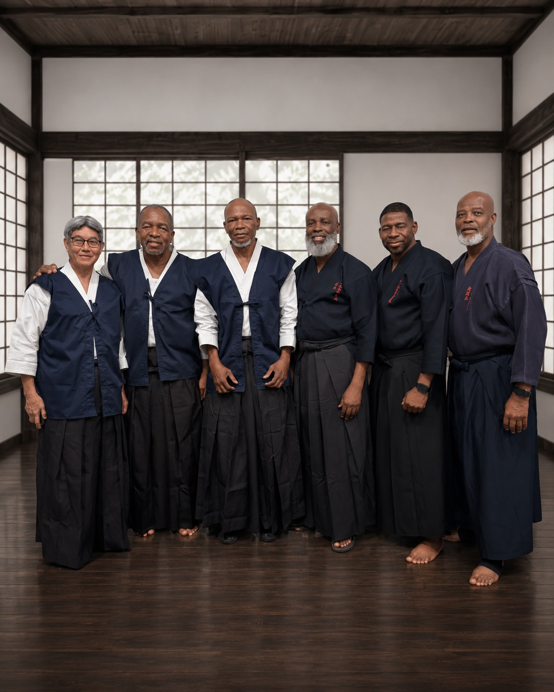

Nuestra filosofíaOur philosophy
Tradición, carácter y desarrollo personal.Tradition, character and personal development.
KARATE SHOTOKAN TRADICIONALTRADITIONAL SHOTOKAN KARATE
Dai-Hanshi Esteban Mayers
DISCIPLINA · RESPETO · TRADICIÓNDISCIPLINE · RESPECT · TRADITION
El arte y el espíritu del Karate Shotokan tradicional en Panamá.The art and spirit of traditional Shotokan Karate in Panama.
Conoce nuestro dojoDiscover our dojo